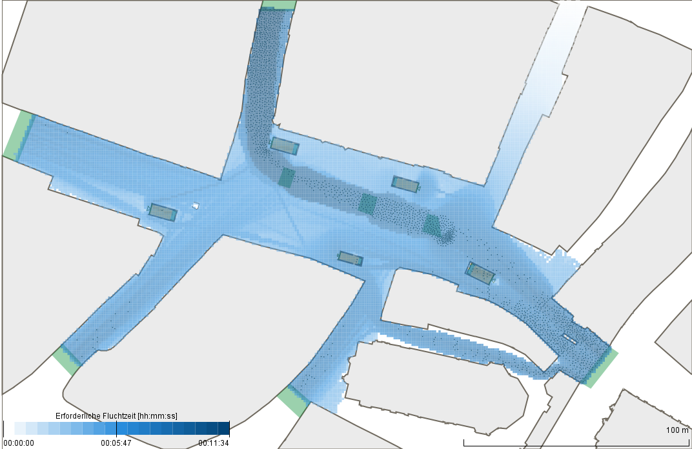

<section class="stuttgart-section" id="stuttgart-section">
    <form id="stuttgart" class="hidden">
        <h2>Analyseergebnisse von Stuttgart</h2>
        <div class="inline">
            <button type="button" onclick="showSchlossplatz()">Szenario Schlossplatz</button>
            <button type="button" onclick="showSchlossplatz()">Szenario Fanwalk</button>
        </div>
        <div id="schlossplatz" class="hidden">
            <h3>Szenario Schlossplatz:</h3>
            <div class="inline">
                <p>In diesem Szenario wurden unterschiedliche Räumungsszenarien untersucht. </p>
                <label for="heatmap">Heatmap für die Räumung des Schlossplatzes: Je dunkler die Einfärbung der Kacheln,
                    desto später ist der Bereich geräumt</label>
                
                <label for="video_stuttgart">Räumungsverlaufdes Schlossplatzes:</label>
                <video id="video_stuttgart" width="640" height="360" controls>
                    <source src="../results/munich/video-Muenchen.mp4" type="video/mp4">
                    Your browser does not support the video tag.
                </video>
            </div>
        </div>
    </form>
</section>